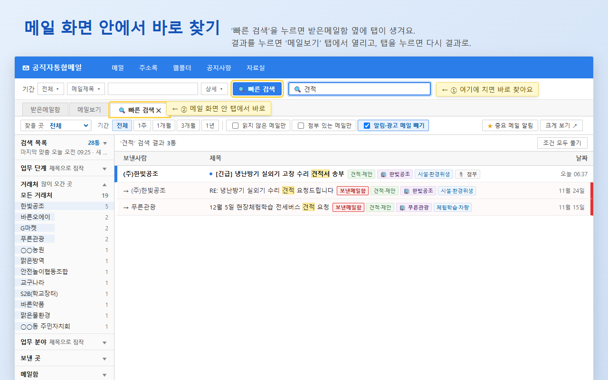
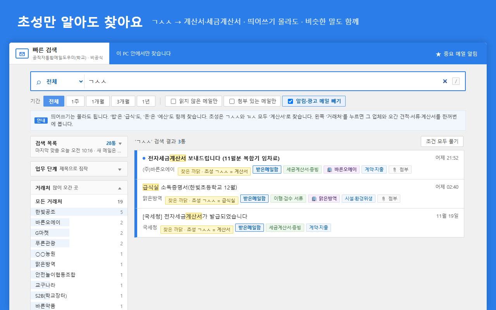
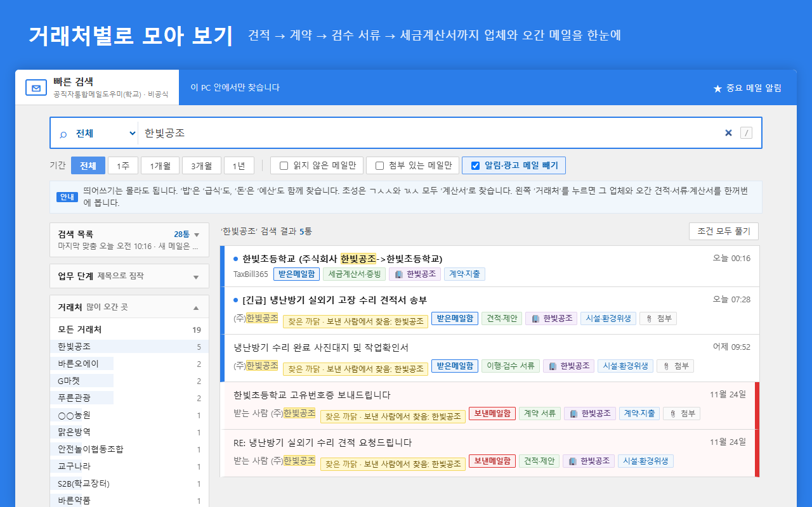
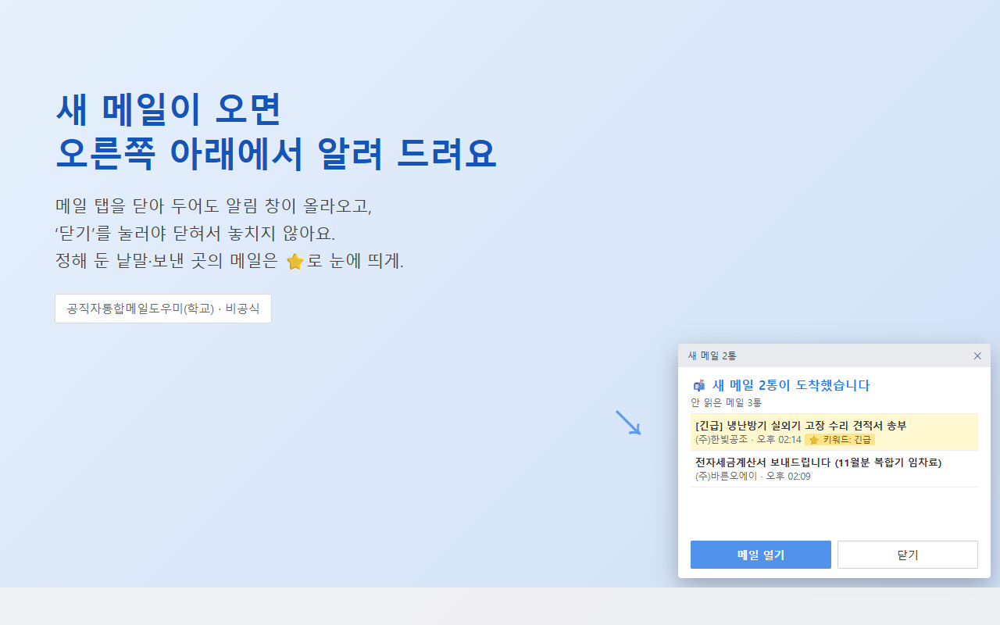

행정실에는 업체·기관과 주고받는 업무 메일이 하루에도 수십 통씩 쌓입니다. 이 도우미는 새 메일을 놓치지 않게 알려 주고, 지난 메일을 업체별·업무 단계별로 빨리 찾게 해 줍니다. 선생님 등 다른 교직원도 쓸 수 있습니다.
행정안전부 또는 공직자통합메일 운영 기관이 만든 공식 프로그램이 아닙니다. 업무용 PC에 설치하기 전에 학교(기관) 정보보안 담당자에게 확인하세요.
동영상으로 보기
예시 화면입니다. 영상이 안 보이면 유튜브에서 보기
화면 미리 보기




화면의 업체·학교 이름과 메일은 모두 지어낸 예시입니다.
주요 기능
📬 새 메일 알림
- 새 메일이 오면 화면 오른쪽 아래에 알림 창이 올라옵니다. 보낸 사람과 제목이 보이고, ‘닫기’를 눌러야 닫혀서 놓치지 않습니다.
- 메일 탭을 닫아 두어도 알려 줍니다. (크롬만 켜져 있으면 됨)
- 크롬 툴바 아이콘에 안 읽은 메일 수가 표시되고, 로그인이 풀리면 알려 줍니다.
- 정해 둔 낱말(예: 긴급, 제출)이나 사람·기관이 보낸 메일은 ⭐와 노란색으로 눈에 띄게 알려 줍니다.
- 로그인 자동 연장: 화면의 ‘이용 연장하기’와 같은 요청을 10분마다 보내 로그인을 유지합니다. 기관 지침상 안 되면 끌 수 있습니다.
🔍 메일 화면 안 ‘빠른 검색’
- 공직자통합메일 검색창 오른쪽에 파란 테두리 ‘🔍 빠른 검색’ 칸이 생깁니다. 치는 대로 받은메일함 옆 ‘빠른 검색’ 탭에서 바로 찾습니다.
- 결과를 누르면 메일 화면의 ‘메일보기’ 탭에서 열리고, ‘빠른 검색’ 탭을 누르면 찾던 결과로 돌아옵니다.
- 띄어쓰기를 몰라도 찾습니다. (“세금 계산서” → “전자세금계산서”)
- 초성으로 찾습니다. (“ㄱㅅㅅ” → 계산서·세금계산서, “ㄱㅈㅅ” → 견적서)
- 비슷한 말도 함께 찾습니다. (“밥” → 급식, “고장” → 수리·보수)
- 메일본문·첨부이름은 공직자통합메일 화면 검색으로 넘겨, 낱말과 기간을 넣고 검색까지 대신 눌러 줍니다.
🗂 행정실 업무에 맞춘 분류
- 거래처별 모아 보기: 업체 이름을 누르면 그 업체와 주고받은 메일을 한꺼번에 봅니다. 발신자가 같은 전자세금계산서 알림 메일도 제목 속 실제 업체 이름으로 묶어 줍니다.
- 업무 단계: 업무가 진행되는 단계(제안 → 계약 → 배송 → 검수 → 정산)에 맞춰 메일을 순서대로 모아 봅니다.
- 업무 분야: 계약·지출, 시설·환경위생, 급식, 보건, 체험학습·차량, 방과후·늘봄 등
- 보낸 곳: 거래 업체, 쇼핑몰, 학교장터·조달, 공공기관, 교육청·학교 등
- 쇼핑몰 주문·배송 알림과 광고는 처음엔 빼고 보여 줘서 업무 메일이 바로 보입니다.
- 같은 제목(RE:/FW:)끼리 묶고, 받은 메일은 파란 띠·보낸 메일은 빨간 띠로 구분합니다.
설치하기
크롬 웹 스토어 (준비 중)
크롬 웹 스토어 등록 심사 중입니다. 등록이 끝나면 여기에 설치 링크를 걸어 둡니다. 스토어에서 설치하면 새 버전이 나올 때 저절로 업데이트됩니다.- 크롬 웹 스토어의 이 확장프로그램 페이지에서 Chrome에 추가를 누릅니다.
- 크롬 오른쪽 위 퍼즐 모양(🧩) 아이콘 → 이 확장프로그램 옆 📌 핀을 눌러 고정합니다.
처음 쓰는 순서
- 공직자통합메일에 평소처럼 인증서로 로그인합니다. 몇 분 안에 새 메일 확인이 시작됩니다.
- 메일 화면 검색창 오른쪽 🔍 빠른 검색 칸에 아무 낱말이나 치면 ‘빠른 검색’ 탭이 열립니다.
- 가운데의 목록 모으기를 한 번 누릅니다. 메일 7천 통이면 2~3분쯤 걸리고, 그동안 다른 일을 해도 됩니다.
- 이제 칸에 치는 대로 찾습니다. 그다음부터는 새 메일이 저절로 목록에 더해집니다.
메일 서버에 부담을 주지 않도록
- 요청은 한 번에 하나씩, 1.5초 넘게 쉬어 가며 1분에 20번을 넘기지 않습니다.
- 처음 한 번만 목록을 모으고, 그 뒤에는 새 메일 확인 때 받은 목록만 더합니다. 전체 맞춤은 하루 한 번까지입니다.
- 검색은 PC에 모아 둔 목록에서만 하므로 서버에 요청하지 않습니다.
개인정보
- 메일 제목·보낸 사람·날짜 목록만 이 PC의 크롬 안에 저장하고, 어디로도 보내지 않습니다.
- 메일 본문과 첨부파일은 가져오지 않으며, 메일을 옮기거나 지우거나 읽음으로 바꾸는 요청을 보내지 않습니다.
- 개발자 서버가 없고, 분석·광고 도구를 쓰지 않습니다.
알아 두기
- 업무 단계·분야·거래처는 제목과 보낸 사람으로 짐작한 것이라 틀릴 수 있습니다.
- 지우거나 옮긴 메일, 다른 곳에서 읽은 표시는 하루 한 번 전체 맞춤 때 검색 목록에 반영됩니다.
- 로그인 자동 연장을 켜 두면 로그인이 하루 종일 유지되므로, 자리를 비울 때는 Win+L로 화면을 잠그세요.